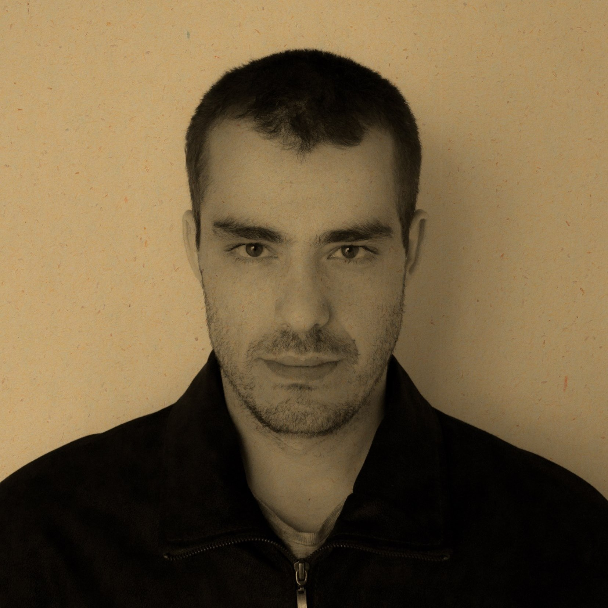

Qualified professional sworn translator in 8 languages with excellent communication and interpersonal skills. Hard-working, friendly and accurate.
Federal University of Paraná
Bachelor of Brazilian Portuguese Language and Business Studies, Translation and Interpreter in the global market
2007 - 2009
Sworn translator
Feb 2019 - Present · 5 years 4 months
Freelance Translator and Interpreter
Nov 2013 - Present · 10 years 7 months
São Paulo (Brazil), Bogotá (Colombia), and Buenos Aires (Argentina)
Working as a freelancer providing translation and interpretation services to clients where needed. Translating documents and articles from one language to another and ensuring the finished articles clearly convey the intended message.